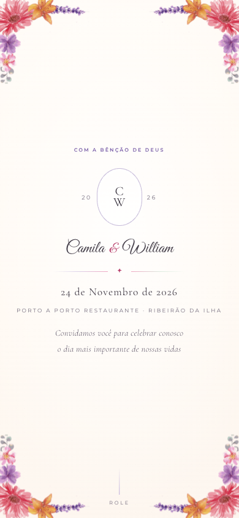
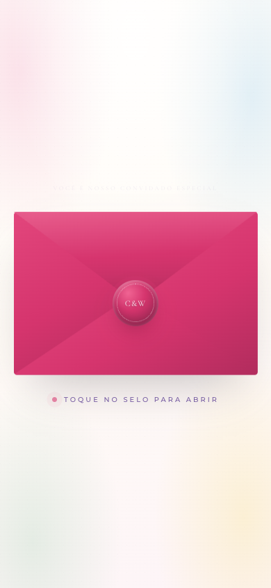
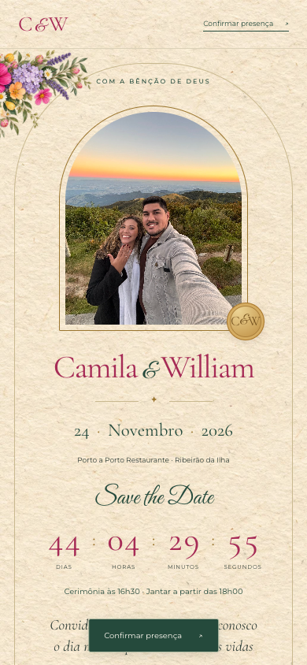

Versão 01 · existente
Convite principal
O primeiro layout. Foi a base dos nomes, textos, fotos, programação, menu e links da nova versão.
Abrir o principal ↗Convites de casamento · 24.11.2026
Três versões para olhar com calma.
A nova versão floral reúne os dados e as fotos do convite principal.

Versão 01 · existente
O primeiro layout. Foi a base dos nomes, textos, fotos, programação, menu e links da nova versão.
Abrir o principal ↗
Versão 02 · existente
O segundo layout, preservado para comparação. Não foi usado como base da nova versão.
Abrir o alternativo ↗
Versão 03 · nova
Flores multicoloridas, papel creme, envelope fúcsia, selo dourado e verde escuro, inspirados na referência.
Abrir o novo convite ↗